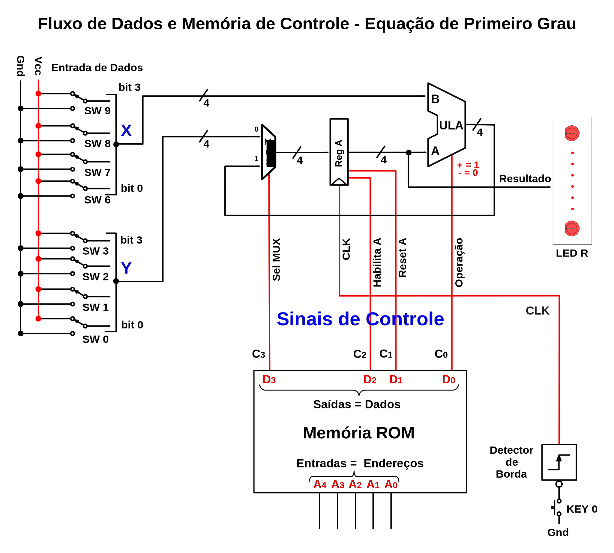
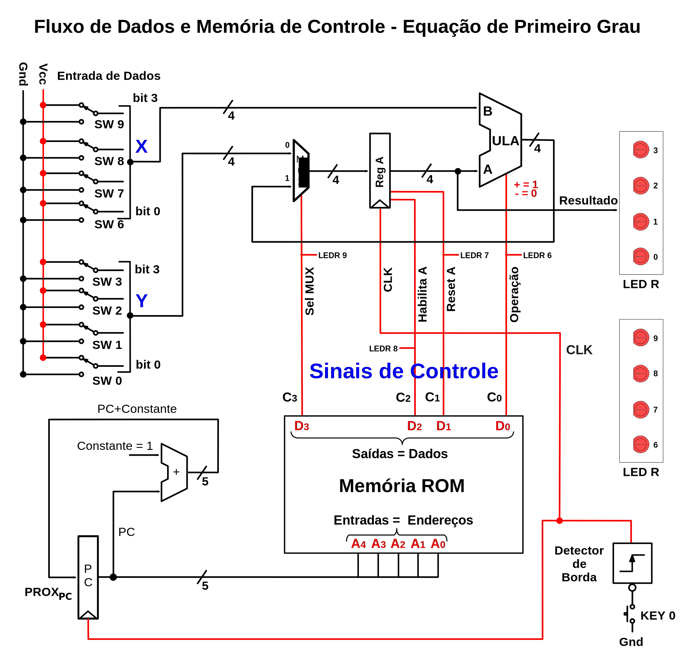

Questão: Como automatizar o funcionamento do fluxo de dados?
No início da aula passada, vimos um fluxo de dados que não reutiliza nenhuma unidade funcional e soluciona a equação através do encadeamento adequado das unidades funcionais disponíveis (baseada no projeto do ENIAC).
A primeira melhoria implementada, foi refazer o projeto para que pudessemos reutilizar as unidades funcionais durante o cálculo. Isso foi possível através de elementos que armazenam os resultados intermediários, os registradores, e da utilização de um fluxo de dados que fosse reconfigurável dinamicamente, utilizando MUXes e uma ULA.
Até agora, para reconfigurar o FD, utilizamos algumas chaves seletoras - uma unidade de controle operada manualmente. Durante a execução da solução de uma equação, a configuração dessas chaves deve ser alterada de acordo com essa equação dada. Isso tornou o circuito muito mais simples. Porém, ainda temos que “pilotar” o processamento da solução.
A nossa próxima alteração no projeto tem como objetivo automatizar essa reconfiguração dinâmica das chaves. Para resolver esse problema, utilizaremos uma memória para armazenar a sequência de ativação dos pontos de controle. O conteúdo de cada posição dessa memória, que é a combinação de controle para uma determinada operação, é chamado de palavra de controle.
O primeiro passo é entender como funciona uma memória e como implementá-la em VHDL.
A abstração para o componente memória é um vetor de dados com n posições e cada posição com m bits. Ou seja, temos n registradores e cada registrador possui m bits. No exemplo abaixo, temos n = 64 posições e m = 8 bits. Essa forma de representação da memória é mais coerente com a visão do programador de computadores.
Outra forma de representar a memória é considerá-la como uma matriz bidimensional. Essa forma está mais próxima do projeto da memória, como pode ser visto no esquema de uma memória RAM de 4 bits e 4 posições mostrado abaixo.
De uma forma simplificada, a memória é composta de dois blocos funcionais:
O decodificador de endereços;
A célula de armazenamento individual, de 1 bit.
Decodificador de Endereços
Para um decodificador com n bits de entrada, ele converte essa entrada, da representação binária, para a representação 1 de 2^n. Ou seja, de acordo com o valor binário de entrada, somente uma linha de saída será ativada - a correspondente à conversão desse valor para decimal.
Para o exemplo da memória com 4 posições e 4 bits por posição, o decodificador utilizado seria o mostrado abaixo.
Dessa forma, temos somente uma linha ativada a cada momento. A linha que estiver ativa, ativará os transistores de conexão da célula com a saída de dados, permitindo que haja a leitura de todos os bits de somente uma posição da memória por vez.
Célula de Armazenamento
No caso da memória estática, para cada célula (bit), temos um circuito similar ao abaixo.
A realimentação entre os inversores força o circuito a uma saída estável, enquanto os transistores são utilizados como chave de conexão entre o estado armazenado e as linhas de saída. O circuito de escrita na célula não está nesse diagrama.
De uma forma muito geral, podemos dividir as memórias em dois grupos:
As que podem ser lidas e escritas dinamicamente:
As que podem ser escritas somente durante a sua fabricação/implementação no produto e lidas dinamicamente:

Responder o quiz de participação, no blackboard, em:
Conteúdos > Participação > Aula_2_Quiz-P1
Como visto acima, a abstração de uma memória, mais próxima ao seu projeto, é a matriz. Portanto, faz todo sentido utilizar um array em VHDL para descrever uma memória.
Em VHDL, o array é um tipo de dados composto que armazena uma coleção de dados de um mesmo tipo. A localização desses dados é indexada através de um valor do tipo escalar (geralmente um natural).
Um exemplo de array é o std_logic_vector. Ele é um conjunto de dados do tipo std_logic, que está definido dentro do pacote std_logic_1164 da biblioteca ieee.
No caso das memórias precisamos de um array bidimensional. Ele pode ser descrito utilizando um tipo que é um array de um subtipo. Como o endereçamento memória é binário, a capacidade da memória (quantidade de posições) deve ser do tipo 2^n, onde n é o número de linhas (bits) de endereçamento.
subtype word_t is std_logic_vector((DATA_WIDTH-1) downto 0); -- A definição do conteúdo de cada posição (a palavra de dados).
type memory_t is array(2**ADDR_WIDTH-1 downto 0) of word_t; -- A definição da quantidade de endereços (posições) da memória (2^n).
signal ram : memory_t;Para ter uma maior riqueza de informações durante a simulação, é boa prática utilizar os sinais, que interligam os componentes em VHDL, do tipo std_logic - que possui 9 estados e não somente o estado lógico um e o estado lógico zero.
Porém, o índice do array tem de ser do tipo escalar e portanto, é necessário fazer a conversão de tipos entre o endereço da memória (prensente na definição da entidade e preferencialmente um std_logic) e o endereço utilizado para acessar o array (escalar).
Para os projetos que serão executados, o ideal é utilizar uma memória com a escrita sincronizada pelo clock e com a leitura assíncrona.
Abaixo, temos o modelo VHDL para uma memória ROM com a inicialização dos seus valores embutida no código (função initMemory).
library IEEE;
use IEEE.std_logic_1164.all;
use ieee.numeric_std.all;
entity memoria is
generic (
dataWidth: natural := 8;
addrWidth: natural := 3
);
port (
-- O fato da interface ser do tipo std_logic auxilía na simulação.
Endereco : in std_logic_vector (addrWidth-1 DOWNTO 0);
Dado : out std_logic_vector (dataWidth-1 DOWNTO 0)
);
end entity;
architecture assincrona of memoria is
type blocoMemoria is array(0 TO 2**addrWidth - 1) of std_logic_vector(dataWidth-1 DOWNTO 0);
function initMemory
-- Inicializa todas as posições da memória com zero:
return blocoMemoria is variable tmp : blocoMemoria := (others => (others => '0'));
begin
-- Inicializa os endereços desejados. Os demais endereços conterão o valor zero:
tmp(0) := x"AA";
tmp(1) := x"42";
tmp(2) := x"43";
tmp(3) := x"44";
tmp(4) := x"45";
tmp(5) := x"46";
tmp(6) := x"47";
tmp(7) := x"55";
return tmp;
end initMemory;
signal memROM : blocoMemoria := initMemory;
begin
-- A conversão de tipos para obter o índice do vetor que será acessado:
Dado <= memROM (to_integer(unsigned(Endereco)));
end architecture;A FPGA possui, além dos blocos lógicos, os blocos de DSP e os blocos dedicados de memória. Para pequenas quantidades de memória, pode-se implementar utilizando os registradores dos blocos lógicos. Porém, para tamanhos maiores de memória, pode-se economizar os blocos lógicos usando os blocos de memória.
Para fazer com que a ferramenta de síntese mapeie o código VHDL para os blocos de memória, são necessários alguns cuidados:
Usar memória com escrita síncrona;
Evitar uso de reset no código da memória;
Verificar se a leitura durante a escrita, se existir, é coerente com o modelo da FPGA;
Entre outros.
A Intel (Altera) indica, no manual de boas práticas de codificação, que sejam utilizados os modelos por ela fornecidos. Veja os modelos disponíveis nos templates do Quartus, que também foram usados na Aba Modelos VHDL.
Responder o quiz de participação, no blackboard, em:
Conteúdos > Participação > Aula_2_Quiz-P2
Implemente e simule uma memória ROM com as seguintes características:
1024 posições e 8 bits por posição;
Contendo o seu nome escrito em ASCII.
Para simular, crie um vetor de contagem que irá “alimentar” o endereçamento da memória.
Durante a simulação, utilize a exibição em ASCII para os dados de saída da memória.
Para automatizar o nosso computador, vamos iniciar com a memória de armazenamento das palavras de controle.
Essa memória deve possuir uma quantidade de posições suficiente para armazenar todos os passos vistos na aula anterior. Cada posição deve poder armazenar a mesma quantidade de bits da palavra de controle, neste caso, 4 bits.
Assim, quando for feito o acesso em sequência, de todos endereços da memória, deverá aparecer, na saída de dados, a sequência de palavras de controle necessárias para executar o processamento da equação 3x - 4 (a mesma da aula passada).

O módulo que determina o endereço da próxima palavra de controle é um somador, que incrementa o endereço atual para obter o próximo endereço (ou próximo PC).
Vamos intergrar esse módulo ao nosso computador e executar o programa para resolver a equação: S = 3x - 4.

Responder o quiz de participação, no blackboard, em:
Conteúdos > Participação > Aula_2_Quiz-P3
Podemos reutilizar os módulos do projeto passado, atualizando somente o top level e adicionando a ROM.
Ambos arquivos estão mostrados abaixo.
É necessário acertar o conteúdo da ROM de acordo com a tabela de palavras de controle, mostrada abaixo.
| Sequência | Entrada De Dados: X | Valor de Sel MUX | Habilita A | Reset A | Operação | Clock | Comentário |
|---|---|---|---|---|---|---|---|
| 0 | N.I. | 1 | 0 | 1 | 1 | ↑ | Zera o Registrador do Acumulador |
| 1 | X | 1 | 1 | 0 | 1 | ↑ | Soma “X” com zero e armazena no Acumulador |
| 2 | X | 1 | 1 | 0 | 1 | ↑ | Soma “X” com “X” e armazena no Acumulador |
| 3 | X | 1 | 1 | 0 | 1 | ↑ | Soma “X” com “2X” e armazena no Acumulador |
| 4 | 4 | 1 | 1 | 0 | 0 | ↑ | Subtrai “4” de “3X” e armazena no Acumulador |
O Reg A também é chamado de Acumulador.
Os arquivos estão listados abaixo. A ROM deverá ter o seu conteúdo ajustado conforme a tabela acima. Para esta equação, como temos somente 5 passos, podemos utilizar uma ROM com 8 posições.
Note que o circuito com o somador, chamado de somaConstante, está nos Modelos VHDL.
library ieee;
use ieee.std_logic_1164.all;
entity Aula2 is
-- Total de bits das entradas e saidas
generic ( larguraDados : natural := 4;
larguraEnderecos : natural := 3;
simulacao : boolean := TRUE -- para gravar na placa, altere de TRUE para FALSE
);
port (
CLOCK_50 : in std_logic;
KEY: in std_logic_vector(3 downto 0);
SW: in std_logic_vector(9 downto 0);
PC_OUT: out std_logic_vector(larguraEnderecos-1 downto 0);
LEDR : out std_logic_vector(9 downto 0)
);
end entity;
architecture arquitetura of Aula2 is
signal chavesX_ULA_B : std_logic_vector (larguraDados-1 downto 0);
signal chavesY_MUX_A : std_logic_vector (larguraDados-1 downto 0);
signal MUX_REG1 : std_logic_vector (larguraDados-1 downto 0);
signal REG1_ULA_A : std_logic_vector (larguraDados-1 downto 0);
signal Saida_ULA : std_logic_vector (larguraDados-1 downto 0);
signal Sinais_Controle : std_logic_vector (3 downto 0);
signal Endereco : std_logic_vector (2 downto 0);
signal proxPC : std_logic_vector (2 downto 0);
signal Chave_Operacao_ULA : std_logic;
signal CLK : std_logic;
signal SelMUX : std_logic;
signal Habilita_A : std_logic;
signal Reset_A : std_logic;
signal Operacao_ULA : std_logic;
begin
-- Instanciando os componentes:
-- Para simular, fica mais simples tirar o edgeDetector
gravar: if simulacao generate
CLK <= KEY(0);
else generate
detectorSub0: work.edgeDetector(bordaSubida)
port map (clk => CLOCK_50, entrada => (not KEY(0)), saida => CLK);
end generate;
-- O port map completo do MUX.
MUX1 : entity work.muxGenerico2x1 generic map (larguraDados => larguraDados)
port map( entradaA_MUX => chavesY_MUX_A,
entradaB_MUX => Saida_ULA,
seletor_MUX => SelMUX,
saida_MUX => MUX_REG1);
-- O port map completo do Acumulador.
REGA : entity work.registradorGenerico generic map (larguraDados => larguraDados)
port map (DIN => MUX_REG1, DOUT => REG1_ULA_A, ENABLE => Habilita_A, CLK => CLK, RST => Reset_A);
-- O port map completo do Program Counter.
PC : entity work.registradorGenerico generic map (larguraDados => larguraEnderecos)
port map (DIN => proxPC, DOUT => Endereco, ENABLE => '1', CLK => CLK, RST => '0');
incrementaPC : entity work.somaConstante generic map (larguraDados => larguraEnderecos, constante => 1)
port map( entrada => Endereco, saida => proxPC);
-- O port map completo da ULA:
ULA1 : entity work.ULASomaSub generic map(larguraDados => larguraDados)
port map (entradaA => REG1_ULA_A, entradaB => chavesX_ULA_B, saida => Saida_ULA, seletor => Operacao_ULA);
-- Falta acertar o conteudo da ROM (no arquivo memoriaROM.vhd)
ROM1 : entity work.memoriaROM generic map (dataWidth => larguraDados, addrWidth => larguraEnderecos)
port map (Endereco => Endereco, Dado => Sinais_Controle);
selMUX <= Sinais_Controle(3);
Habilita_A <= Sinais_Controle(2);
Reset_A <= Sinais_Controle(1);
Operacao_ULA <= Sinais_Controle(0);
-- I/O
chavesY_MUX_A <= SW(3 downto 0);
chavesX_ULA_B <= SW(9 downto 6);
-- A ligacao dos LEDs:
LEDR (9) <= SelMUX;
LEDR (8) <= Habilita_A;
LEDR (7) <= Reset_A;
LEDR (6) <= Operacao_ULA;
LEDR (5) <= '0'; -- Apagado.
LEDR (4) <= '0'; -- Apagado.
LEDR (3 downto 0) <= REG1_ULA_A;
PC_OUT <= Endereco;
end architecture;library IEEE;
use IEEE.std_logic_1164.all;
use ieee.numeric_std.all;
entity memoriaROM is
generic (
dataWidth: natural := 4;
addrWidth: natural := 3
);
port (
Endereco : in std_logic_vector (addrWidth-1 DOWNTO 0);
Dado : out std_logic_vector (dataWidth-1 DOWNTO 0)
);
end entity;
architecture assincrona of memoriaROM is
type blocoMemoria is array(0 TO 2**addrWidth - 1) of std_logic_vector(dataWidth-1 DOWNTO 0);
function initMemory
return blocoMemoria is variable tmp : blocoMemoria := (others => (others => '0'));
begin
-- Palavra de Controle = SelMUX, Habilita_A, Reset_A, Operacao_ULA
-- Inicializa os endereços:
tmp(0) := "1011"; -- Desta posicao para baixo, é necessário acertar os valores
tmp(1) := "0000";
tmp(2) := "0000";
tmp(3) := "0000";
tmp(4) := "0000";
tmp(5) := "0000";
tmp(6) := "0000";
tmp(7) := "0000";
return tmp;
end initMemory;
signal memROM : blocoMemoria := initMemory;
begin
Dado <= memROM (to_integer(unsigned(Endereco)));
end architecture;O resultado da compilação será o circuito, em RTL, mostrado no diagrama abaixo.
Para fazer a simulação, reagrupe os sinais de entrada e saída conforme o mostrado na figura abaixo.
Além disso, repare nos valores da entrada de dados, mostrados abaixo.
Considerando o valor de X como sendo 3, o resultado da simulação está mostrado abaixo.

Esta Atividade deverá ser entregue através do Blackboard!